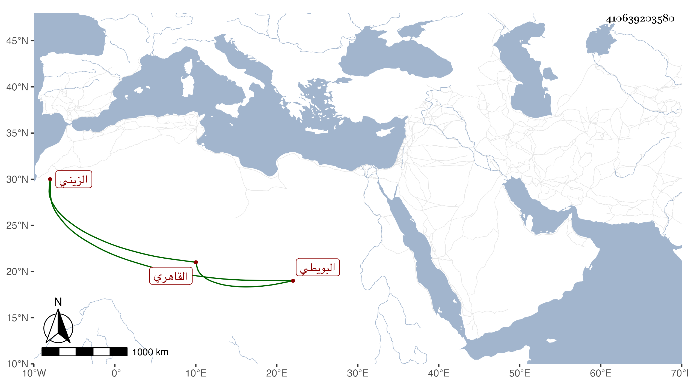

0902Sakhawi.DawLamic.ITO20230111-ara1.EIS1600.410639203580
Biography ID: 410639203580
435
محمد كريم الدين البويطي الأصل القاهري الزيني نسبة لخال أمه عبد القادر الماضي الحنبلي وهو أخو الذي قبله وخال البدر السعدي بل وابن عمته أيضا ويعرف بلقبه . ولد تقريبا سنة ست وعشرين وثمانمائة ونشأ فتعلم المباشرة وخدم بها في عدة أماكن ولازم خال أمه النور البلبيسي فتدرب به في مطالعة التواريخ وشبهها وصار يحفظ كثيرا من الحكايات والأشعار والنكت بل واعتنى بأنواع الفروسية من الثقاف والرمي ونحو ذلك وبرع وغزا غير مرة ، وكذا حج مرارا وجاور وحفظ الخرقي بل ومنظومة العز القدسي قاضي الشام الألفية التي أفرد فيها مفردات أحمد ، وحضر دروس القاضي عز الدين الكناني وسمع عليه في المسند وغيره وكذا سمع على شيخنا وجماعة ، وجلس بأخرة لما ولي ابن أخته القضاء مع الشهود ولم يحصل على طائل مع اشتماله على فضائل وكذا لعبد الغني بن الجيعان به مزيد اعتناء . مات في ليلة الاثنين خامس ربيع الآخر سنة ثمان وثمانين وصلي عليه من الغد في رحبة مصلى باب النصر ثم دفن بحوش سعيد السعداء عند أمه رحمه الله وإيانا .
